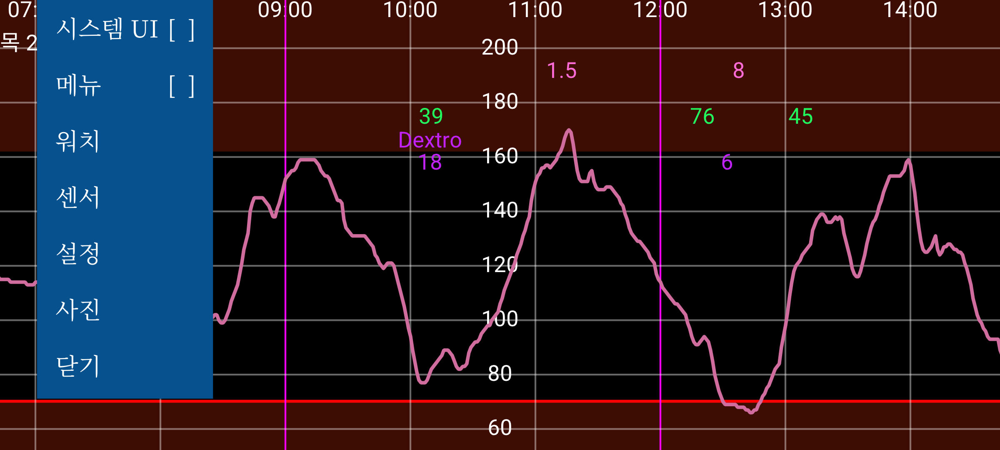
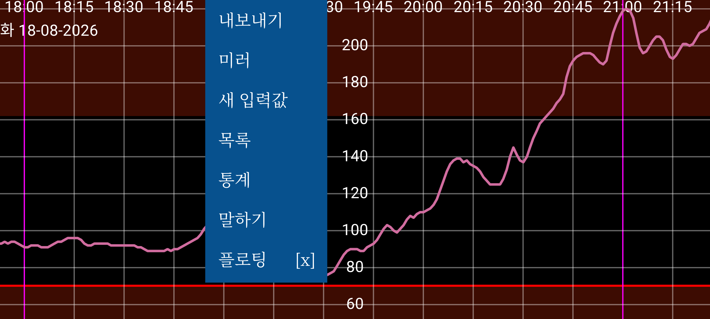
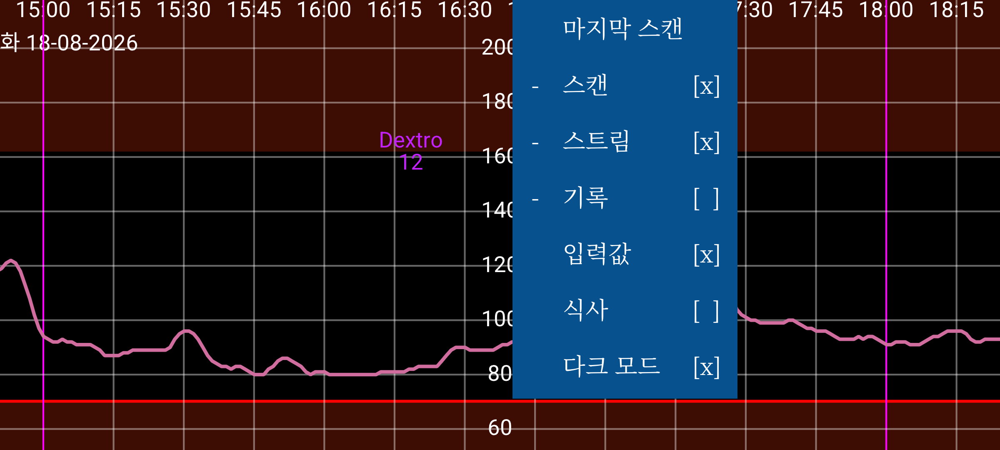
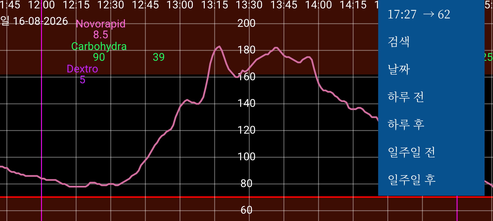

ar be de es fr hi it ja ko nl pl pt ru tr uk uz zh en
Juggluco는 당뇨병 환자가 혈당을 모니터링하고 관리하는 데 도움을 주는 앱입니다. FreeStyle Libre(0 및 2) 센서를 NFC로 스캔할 수 있으며, FreeStyle Libre 2, 2+, 3, 3+, Sibionics GS1Sb 및 GS3, Dexcom G7/ONE+, Accu-Chek SmartGuide, CareSens Air 및 Linx/Lumiflex/Aidex X 센서에서 Bluetooth로 혈당값을 받을 수 있습니다.
프로그램을 처음 실행했을 때 스마트폰의 NFC 안테나에 FreeStyle Libre 2 센서를 가까이 대면 센서를 스캔할 수 있습니다. 그 뒤 Juggluco는 FreeStyle Libre 2 센서와 Bluetooth 연결을 만들려고 시도하며, 추가 스캔 없이 매분 혈당값을 받습니다. Abbott의 Libre 3 앱으로 활성화한 FreeStyle Libre 3 또는 3+ 센서를 넘겨받으려면 설정→데이터 교환→LibreView에서 센서를 활성화할 때 사용한 LibreView 계정 정보를 지정하고, “계정 ID 받기”를 누른 뒤 계정 ID가 도착할 때까지 기다린 다음 센서를 스캔해야 합니다. FreeStyle Libre 3 리더 또는 Libre 2와 Libre 3를 모두 지원하는 미국용 Libre 앱으로 시작한 Libre 3 센서는 넘겨받을 수 없습니다. Juggluco는 Accu-Chek SmartGuide를 제외하면 앞에서 언급한 모든 센서를 직접 활성화할 수도 있습니다.
Sibionics GS1Sb, Dexcom G7/ONE+, Accu-Chek SmartGuide, CareSens Air 또는 Linx/Lumiflex/Aidex X 센서에 연결하려면 왼쪽 메뉴→사진으로 해당 데이터 매트릭스를 스캔해야 합니다. Dexcom G7/ONE+ 센서는 Bluetooth로 페어링됩니다. 대부분의 휴대전화에서는 페어링 요청을 확인해야 하며, 빠르게 확인해야 합니다. 늦으면 다시 5분을 기다려야 합니다. 기다리는 동안 화면을 켜 두십시오. Samsung Galaxy Watch 4와 7에서는 페어링에 동의할 필요가 없습니다. 사용이 끝난 Dexcom G7/ONE+ 센서는 혈당 기록을 중단한 뒤에도 오랫동안 Bluetooth로 검색될 수 있습니다. Juggluco가 잘못된 센서와 페어링하려고 하지 않도록 오래된 센서를 Bluetooth가 닿지 않는 곳 (예: 약 15미터 떨어진 곳에 있는 전자레인지 안에 넣어 두기. 전자레인지는 패러데이 케이지 역할을 합니다.) 에 두십시오. 특히 이전 센서와 새 센서의 PIN 코드가 같을 때 중요합니다. 이전에 센서와 연결했던 앱과 기기는 끄거나, 강제 종료하거나, 제거하십시오. Accu-Chek SmartGuide 센서를 페어링할 때는 PIN을 입력해야 합니다.
Juggluco로 Sibionics GS3 센서를 시작하려면 포장에 있는 데이터 매트릭스를 스캔하거나 센서 자체를 NFC로 스캔하십시오. 그러면 ID를 입력하는 화면이 나타납니다. 센서를 이미 Sibionics GS3 앱에서 사용했거나 나중에 그 앱에서도 사용하고 싶다면 Sibionics GS3 앱에서 사용한 이메일 주소와 비밀번호를 입력하고 서버에서 계정 ID를 받아야 합니다. 새 센서이고 Juggluco에서만 사용할 예정이라면 임의의 번호를 입력할 수 있습니다.
센서 연결에 대한 자세한 내용은 https://www.juggluco.nl/Juggluco/sensors를 참조하십시오.
프로그램에는 네 개의 메뉴가 있습니다. 화면의 빈 부분을 터치하면 메뉴를 열 수 있습니다. 화면의 왼쪽 1/4을 터치하면 왼쪽 메뉴, 가운데 영역의 왼쪽 절반을 터치하면 두 번째 메뉴, 가운데 영역의 오른쪽 절반을 터치하면 세 번째 메뉴, 오른쪽 1/4을 터치하면 네 번째 메뉴가 열립니다.
메뉴 4: 이동(오른쪽)
화면 위에서 좌우로 움직이면 곡선을 왼쪽과 오른쪽으로 이동할 수 있습니다. 오른쪽의 이동 메뉴를 사용할 수도 있습니다. 날짜를 사용하면 날짜를 선택할 수 있고, 검색을 사용하면 혈당값과 입력한 숫자를 검색할 수 있습니다. 오른쪽 메뉴의 첫 번째 항목은 현재 시간이며, 이를 선택하면 그래프의 오른쪽 끝, 즉 현재 시점으로 이동합니다.
설정에서 혈당 수동 배율 조정을 켜면 화면의 위쪽 영역에서 위아래로 움직여 그래프의 최댓값을 바꾸고, 아래쪽 영역에서 위아래로 움직여 최솟값을 바꿀 수 있습니다. 설정에서 시간 수동 배율 조정을 켜면 두 손가락 사이의 거리를 바꾸어 화면에 표시되는 시간 범위를 늘리거나 줄일 수 있습니다.
메뉴 3: 표시
가운데 오른쪽 메뉴에는 표시 옵션이 있습니다. 마지막 스캔을 보려면 첫 번째 항목을 터치하십시오. 스캔 뒤에 표시가 있으면 스캔 값이 그래프에 표시됩니다. 스캔 값은 Libre 0 또는 2 센서를 NFC로 스캔했을 때 얻는 현재 혈당값입니다. 스캔하면 센서의 최근 8시간 동안의 15분 간격 기록 값도 휴대전화로 전송됩니다. 이 값의 표시 여부는 기록을 터치하여 조절합니다. Libre 3 센서는 Bluetooth로 5분 간격의 기록 값을 보냅니다. 스트림은 FreeStyle Libre 2 및 3 센서가 Bluetooth를 통해 매분 이 앱으로 보내는 혈당값을 뜻합니다.
인슐린, 탄수화물 및 활동을 기록하기 위해 원하는 레이블과 함께 여러 종류의 숫자를 입력할 수 있습니다. 이 값들은 지정한 날짜와 시간에 혈당 그래프의 일정한 높이에 표시됩니다. 그래프의 점이나 입력한 숫자를 터치하면 해당 항목에 대한 정보가 표시됩니다. 입력한 숫자를 길게 누르면 수정할 수 있습니다. 왼쪽 가운데 메뉴의 숫자 목록에서 해당 데이터 항목을 터치해도 수정할 수 있습니다. 입력값은 입력한 숫자를 표시할지 결정합니다. 설정에서 이 숫자에 사용할 레이블을 지정할 수 있으며, 숫자 위에는 해당 레이블이 표시됩니다.
메뉴 2: 가운데 왼쪽
가운데 왼쪽 메뉴의 새 입력값을 터치하여 이러한 숫자를 입력할 수 있습니다. 내보내기는 데이터를 .tsv(탭으로 구분된 값) 형식의 파일로 저장합니다. 미러를 사용하면 IP/TCP를 통해 다른 기기에서 실행 중인 이 앱으로 데이터를 보내 같은 정보를 표시할 수 있습니다. 목록은 입력한 숫자의 목록을 보여 줍니다. Juggluco가 Bluetooth를 통해 충분한 혈당값을 받았다면 통계에서 몇 가지 통계를 볼 수 있습니다. 특정 혈당 범위에 들어간 측정값의 비율, Glucose Management Indicator(HbA1c 예측 지표), 혈당 변동성, 그리고 하루의 각 분마다 값의 0%, 5%, 25%, 50%, 75%, 95%, 100%가 그 아래에 위치하는 혈당값을 보여 주는 요약 그래프가 표시됩니다. 말하기에서는 Juggluco가 들어오는 혈당값, 그래프에서 터치한 요소 또는 메시지를 음성으로 읽도록 할 수 있습니다. 플로팅을 켜면 플로팅 혈당이 표시됩니다. 이는 다른 앱 위의 화면에 표시되는 혈당값입니다. 설정에서 색상과 크기를 변경할 수 있습니다.
메뉴 1: 왼쪽
왼쪽 메뉴에는 설정이 있습니다. 여기에서 혈당 단위를 mmol/L 또는 mg/dL로 설정하고, 레이블을 지정하고, 혈당 알람과 약 복용 알림을 설정하고, 표시 범위를 지정할 수 있습니다. 시스템 UI는 Android의 조작 버튼과 상태 표시줄을 표시할지 결정합니다. 워치에서는 Juggluco가 여러 종류의 스마트워치로 데이터를 보내도록 설정할 수 있습니다. 센서에서는 센서와의 연결 상태를 확인할 수 있습니다. 메뉴를 터치하면 네 개의 메뉴를 한 번에 표시하여 TalkBack이 읽을 수 있는 레이아웃으로 보여 줍니다. 닫기를 사용하면 Juggluco를 종료할 수 있습니다.